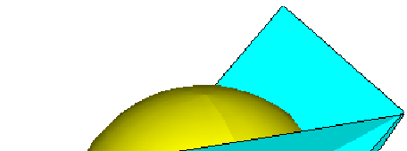
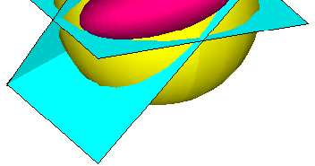
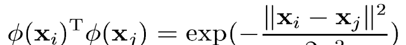
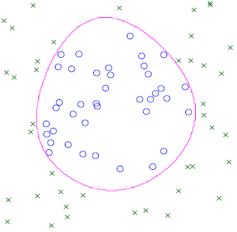
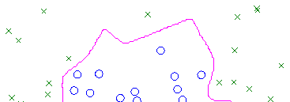

Approximate Inference
Part 1 of 2
Tom Minka
Microsoft Research, Cambridge, UK
Machine Learning Summer School 2009
http://mlg.eng.cam.ac.uk/mlss09/
Bayesian paradigm
• Consistent use of probability theory for
representing unknowns (parameters,
latent variables, missing data)
Bayesian paradigm
• Bayesian posterior distribution
summarizes what we’ve learned from
training data and prior knowledge
• Can
a
n u
s
u e
e p
o
p s
o te
t r
e io
i r
o t
o
t :
o
– Describe training data
– Make predictions on test data
– Incorporate new data (online learning)
• Today’s question: How to efficiently
represent and compute posteriors?
Factor graphs
• Shows how a function of several variables
can be factored into a product of simpler
functions
• f(
f x,y
, ,z
, ) =
(
x+y)(y+z)(x+
x z)
• Very useful for representing posteriors
Example factor graph
p(x | m) = N (x ; m )
1
,
i
i
Two tasks
• Modeling
– What graph should I use for this data?
• Inference
– Gi
G ven t
he graph and data, wh
w at is t
he me
m an
of x (for example)?
– Algorithms:
• Sampling
• Variable elimination
• Message-passing (Expectation Propagation,
Variational Bayes, …)
A
A (
see
e m
e i
m ng
n l
g y) int
n rac
a tab
a l
b e
e pr
p ob
o l
b em
e

Clutter problem
• Want to estimate x given multiple y’s
Exact posterior
exact
)
,D
(x
p
-1
0
1
2
3
4
x

Representing posterior distributions
Sampling
Deterministic approximation
Good for complex,
Good for simple,
multi-modal distributions
smooth distributions
Slow, but predictable accuracy
Fast, but unpredictable accuracy


Deterministic approximation
Laplace’s method
• Bayesian curve fitting, neural
networks (MacKay)
• Bayesian PCA (Minka)
Variational bounds
• Bayesian mixture of experts (Waterhouse)
• Mixtures of PCA (Tipping, Bishop)
• Factorial/coupled Markov models
(Ghahramani, Jordan, Williams)

Moment matching
Another way to perform
deterministic approximation
• Much higher accuracy on some
problems
Assumed-density filtering
(1984)
Loopy belief propagation
(1997)
Expectation Propagation
(2001)
Today
• Moment matching
(Expectation Propagation)
Tomorrow
• Variational bounds
(Variational Message Passing)
Best Gaussian by moment
matching
exact
bestGaussian
)
,D
(x
p
-1
0
1
2
3
4
x
Strategy
• Approximate each factor by a Gaussian in
x
Approximating a single factor


(naïve)
f (x)
i
×
\
×
q i
q (x)
=
p(x)


(informed)
f (x)
i
×
\
q i
×
q (x)
=
p(x)
Single factor with Gaussian context


Gaussian multiplication formula
Approximation with narrow context

Approximation with medium context

Approximation with wide context


Two factors
x
x
Message passing


Three factors
x
x
Message passing
Message Passing =
Distributed Optimization
• Messages represent a simpler distribution q(x)
that approximates p(x)
– A distributed representation
• Me
M ssage passing =
= optimi
m zing q to f
it p
– q stands in for p when answering queries
• Choices:
– What type of distribution to construct (approximating
family)
– What cost to minimize (divergence measure)
Distributed divergence minimization
• Write p as product of factors:
• Ap
A p
p r
p ox
o im
i a
m t
a e
t
e f
a
f c
a to
t r
o s o
n
o e
n
e b
y
b o
n
o e
n :
e
• Multiply to get the approximation:


Global divergence to local divergence
• Global divergence:
• Local divergence:

Message passing
• Messages are passed between factors
• Messages are factor approximations:
• Factor a receives
– Mi
M nimi
m ze local divergence to g
et
– Send to other factors
– Repeat until convergence
Gaussian found by EP
ep
exact
bestGaussian
)
,D
(x
p
-1
0
1
2
3
4
x
Other methods
vb
laplace
exact
)
,D
(x
p
-1
0
1
2
3
4
x
Accuracy
Posterior mean:
exact = 1.64864
ep = 1.64514
laplace = 1.61946
vb
vb
=
1
.
1 61
6 8
1 3
8 4
3
Posterior variance:
exact = 0.359673
ep = 0.311474
laplace = 0.234616
vb = 0.171155


Cost vs. accuracy
20 points
200 points
Deterministic methods improve with more data (posterior is more Gaussian)
Sampling methods do not
Ti
T me
e s
er
e i
r es
e p
r
p o
r b
o l
b em
e s
Example: Tracking
Guess the position of an object given noisy measurements
y2
x2
x1
x3
y4
y
y
1
3
x4
Object
Factor graph
x
x
x
x
1
2
3
4
y
y
y
y
1
2
3
4
ν
e.g.
x = x −1 +
t
t
t
(random walk)
y
x
t =
t + noise
want distribution of x’s given y’s
Approximate factor graph
x
x
x
x
1
2
3
4
Splitting a pairwise factor
x
x
1
2
x
x
1
2
Splitting in context
x
x
2
3
x
x
2
3
Sweeping through the graph
x
x
x
x
1
2
3
4
Sweeping through the graph
x
x
x
x
1
2
3
4
Sweeping through the graph
x
x
x
x
1
2
3
4
Sweeping through the graph
x
x
x
x
1
2
3
4


Example: Poisson tracking
• y is a Poisson-distributed integer with
t
mean exp(x )
t
Poisson tracking model
p(x ) ~ N ( 1
,
0 0 )
0
1
p(x | x ) ~ N (x , 0
.
0
)
1
t
t 1
−
t 1
−
p( y | x ) = exp(
x
y x
e t
− ) / y !
t
t
t
t
t
Factor graph
x
x
x
x
1
2
3
4
y
y
y
y
1
2
3
4
x
x
x
x
1
2
3
4
Approximating a measurement
factor
x1
y1
x1

Posterior for the last state

EP for signal detection
(Qi and Minka, 2003)
• Wireless communication problem
• Transmitted signal = a sin(ωt + φ )
• (a,φ) vary to encode each symbol
• In
I
n c
om
o p
m l
p e
l x
e n
u
n m
u b
m e
b r
e s:
φ
i
: ae
Im
a
φ
Re
Binary symbols, Gaussian noise
• Symbols are
s
1
= 1 and 0
s = 1
−
(in complex plane)
• Received signal yt = a sin(ωt + φ) + noise
• Opt
p i
t m
i a
m l
a
l d
e
d t
e e
t c
e ti
t o
i n
o
n i
s
i e
a
e s
a y i
n
i
n t
h
t i
h s
i c
as
a e
e
yt
0
s
1
s
Fading channel
• Channel systematically changes amplitude
and phase:
y
x s
t =
t t + noise
• st = t
r
t an
a s
n mi
m t
i t
t e
t d
e
d s
ymb
m o
b l
o
• xt = channel multiplier (complex number)
• x
y
1
t
changes over time
t
x s
t
0
x s
t
Differential detection
• Use last measurement to estimate state:
x
y
s
t ≈
/
t 1
−
t 1
−
• State estimate is noisy – can we do
be
b t
e t
t e
t r
e ?
yt
yt 1
−
− yt 1−
Factor graph
s
s
s
s
1
2
3
4
y
y
y
y
1
2
y3
4
x
x
x
1
2
3
x4
Symbols can also be correlated (e.g. error-correcting code)
Channel dynamics are learned from training data (all 1’s)


Splitting a transition factor


Splitting a measurement factor
On-line implementation
• Iterate over the last δ measurements
• Previous measurements act as prior
• Res
e ul
u t
l s
t c
om
o p
m a
p r
a ab
a l
b e
l
e t
o
t
o p
a
p r
a ti
t c
i le
l
e f
i
f lit
l e
t r
e in
i g
n ,
g
, b
u
b t
u
t
much faster


Clas
a sifi
f c
i at
a i
t o
i n
o
n p
r
p o
r b
o l
b em
e s
Spam filtering by linear separation
Not spam
Spam
Choose a boundary that will generalize to new data
Linear separation
Minimum training error
solution (Perceptron)
Too arbitrary – won’t generalize well
Linear separation
Maximum-margin
solution (SVM)
Ignores information in the vertical direction
Linear separation
Bayesian
solution
(via averaging)
Has a margin, and uses information in all dimensions


Geometry of linear separation
Separator is any vector w such that:
T
w
x
(class 1)
i > 0
T
w
x
(class 2)
i < 0
w
=1
(sphere)
This set has an unusual shape
SVM: Optimize over it
Bayes: Average over it
Factor graph

Performance on linear
separation
EP Gaussian approximation to posterior

Time vs. accuracy
A typical run on the 3-point problem
Error = distance to true mean of w
Billiard = Monte Carlo sampling
(Herbrich et al, 2001)
Opper&Winther’s algorithms:
MF = mean-field theory
TAP = cavity method (equiv to Gaussian EP for this problem)




Gaussian kernels
• Map data into high-dimensional space so
that
Bayesian model comparison
• Multiple models M with prior probabilities
i
p(M )
i
• Posterior probabilities:
• For equal priors, models are compared
using model evidence:

Highest-probability kernel

Margin-maximizing kernel


Bayesian feature selection
Synthetic data where 6 features are relevant (out of 20)
Bayes picks 6
Margin picks 13
EP versus Monte Carlo
• Monte Carlo is general but expensive
– A sledgehammer
• EP exploits underlying simplicity of the
pr
p ob
o l
b e
l m
e
m (
if
i
f i
t
i
t ex
e is
i ts
t )
• Monte Carlo is still needed for complex
problems (e.g. large isolated peaks)
• Trick is to know what problem you have
Software for EP
• Bayes Point Machine toolbox
http://research.microsoft.com/~minka/papers/ep/bpm/
• Sparse Online Gaussian Process toolbox
http://www.kyb.tuebingen.mpg.de/bs/people/csatol/ogp/index.html
• Infer.NET
http://research.microsoft.com/infernet
Further reading
• EP
E
P b
i
b b
i l
b ilo
i g
o r
g ap
a h
p y
h
http://research.microsoft.com/~minka/papers/ep/roadmap.html
• EP quick reference
http://research.microsoft.com/~minka/papers/ep/minka-ep-
quickref.pdf
Tomorrow
• Variational Message Passing
• Divergence measures
• Comparisons to EP